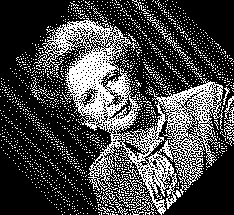

You often want to rotate an image by a certain amount. The normal way to achieve this to apply a transformation matrix. The rotation matrix looks like this:
| cos θ | sin θ |
| -sin θ | cos θ |
| cos θ | -sin θ |
| sin θ | cos θ |
void rotatebymatrix(unsigned char *binary, int width, int height, double cx, double cy, double theta, unsigned char *out)
{
double rotmtx[2][2];
double tx, ty;
double rx, ry;
double dx, dy;
int dxi, dyi;
int x, y;
rotmtx[0][0] = cos(theta);
rotmtx[0][1] = -sin(theta);
rotmtx[1][0] = sin(theta);
rotmtx[1][1] = cos(theta);
for (y = 0; y < height; y++)
{
for (x = 0; x < width; x++)
{
tx = x - cx;
ty = y - cy;
rx = tx * rotmtx[0][0] + ty * rotmtx[0][1];
ry = tx * rotmtx[1][0] + ty * rotmtx[1][1];
dx = rx + cx;
dy = ry + cy;
dxi = (int) dx;
dyi = (int) dy;
if (dxi >= 0 && dxi < width && dyi >= 0 && dyi < height)
{
out[y*width + x] = binary[dyi*width + dxi];
}
}
}
}
The snag is that you miss some pixel and duplicate others, because the rotated values not longer lie at integer values. With a continuous rgba image you can of course take the wieighted average of four pixels and do interpolation. But you can't do that with a binary image.
To get round this problem we shear instead. A shearing transformation is.
| 1 | shear x |
| 0 | 1 |
By iteratively applying shearing transformations in x and y, we can achive rotation. This won;t solve our problem in itself. But we can rewrite the shear to use only integer transforms, and not drop any pixels. (We go through the rows and columns, and always clamp the row shift for that row to a whole number of pixels). This is the basis for the shear transform.
You can see the results here
We've chosen a halftoned image of Margaret Thatcher. The right image is rotated by shear.
Code: rotatebyshear.c